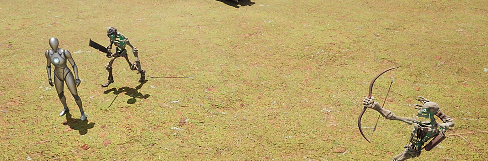

Thesis Project
Developing an adaptive player behaviour driven artificial intelligence for an ARPG

The thesis project I worked on was an upgrade from the previous university project (#2). I had to create an adaptive, player behaviour driven artificial intelligence for an action RPG, and analyze different player behaviour types. The project was done in Unreal Engine 5, in cooperation with a fellow student who provided the game's ability system via GAS.
The basic idea behind the adaptive system was to first analyze different player behaviours in ARPGs specifically. Four types were chosen: kiting, passive, spamming, and AoE spamming. The system had to be able to impact these patterns by counteracting it via statistical changes or by changing the AI's behaviour. At the end of the project the system was tested and evaluated in a survey with 20+ participants, leading to a positive result.
The system is based on a control component which is responsible for timing the sampling, calculation (analysis of behaviour), and the decision making (spawning). The control component derives from an UActorComponent, making it attachable to both characters and regular objects.
The system keeps track of the player's behaviour via a sampling and feedback system. The sampling is based on a timer while feedbacks are from the AI or the player being hit. There are Modifiers which are responsible for calculating a base change and then optionally interpolating it. They generate one or more Plans, which is then used by the controller to change it's own values/behaviour. These modifiers are then registered into a Strategy which is responsible for picking the right plans from the modifiers. The controller then communicates with the Strategy to generate plans or get changes.
The calculation of spawn points are done via EQS to make the system capable of dynamically changing the area of spawning. An example for it can be seen on the picture. If the system wants to spawn two enemies with a 1.0 factor of spreading the enemies, it will pick spawn points 0 and 5.